This document is a walkthrough of the working app, not the pitch. Every screenshot below was taken with Playwright
against npm run dev on this machine, in this order, with no staged data — the numbers you see
(crush minutes, prices, vote counts, hash prefixes) are whatever the engine and the room actually produced during
the capture run. Nothing was edited into the screenshots afterward.
What we want from you
You are acting as an external judge for a 24-hour hackathon submission (HackCelestial 3.0, PS-8: Mega-Event
Hospitality Orchestration — intelligent capacity and crowd management across accommodation, transport and
visitor movement). About 320 teams entered, roughly 120 on this same problem statement. Read the screenshots
below in order — they walk through the actual product exactly as a user would encounter it — then answer:
Does the UI read as a finished, premium product, or does it look like a hackathon prototype? Be specific about which screens undersell the work and why (spacing, hierarchy, contrast, motion, copy density — whatever you actually notice).
Is the uniqueness claim earned? The pitch is "every other team watches the crush happen; this tells you 40 minutes early, proves why, and tells you how long you have left to stop it." Judging only from what's on screen, does the evidence support that claim, or does it feel asserted rather than shown?
Rank the five most valuable changes we could make in the time remaining, ordered by (impact on a judge's first impression) × (plausible effort). Assume the engine and data pipeline are done and correct — focus on what a judge sees and feels in a 5-minute demo.
Name anything that looks broken, inconsistent, or like a placeholder — a number that doesn't add up, a label that's unclear, a screen that looks unfinished next to its neighbors, inconsistent terminology, etc.
One thing to cut. If we had to remove a feature or screen to spend that time polishing everything else, what would you remove and why?
What Pravaah is, in one paragraph
A deterministic crowd-flow simulator for event organisers. It rehearses a full evening minute-by-minute
(hotels, trains, roads, gates in one model), predicts where and when a crowd crush happens via a 60-run
ensemble, explains the cause by removing factors and re-running, proves a fix by simulating every candidate
plan (including the ones that fail), and hands the approved plan to real people: crowd messages in three
languages, a live "Room" where phones vote and the simulation re-runs with real acceptance rates, a
stress-test against 192 bad nights, and a tamper-evident log of every decision. No LLM ever produces a
number — an engine (simulate(), ported faithfully from a working prototype with a golden test)
produces every figure on screen; an LLM only rewords text and parses typed what-if questions.
Known limitations (we already know these)
Models arrival only, not egress (leaving the venue). Hotel/lane/lane-rate numbers for DY Patil are plausible
estimates, not surveyed. Nudge-acceptance parameters are hand-calibrated (The Room is a live check on them).
The Room's server state is in-memory on the demo laptop, not persisted. The Bengaluru replay deliberately
omits gate-lane plans because the engine doesn't cap entry at venue capacity. SMS delivery needs Twilio keys
we don't have. Tell us if you find more.
01
Cover page — first five seconds
This is what a judge sees before clicking anything. The right-hand panel is not a static illustration — it's
the actual engine running live in the browser, showing the real do-nothing evening at DY Patil Stadium
(people flowing from Nerul/Seawoods/Palm Beach toward Gates 1/3/5), with a live-measured
simulate() timing badge. /replay and /venues are reachable from the
header nav.
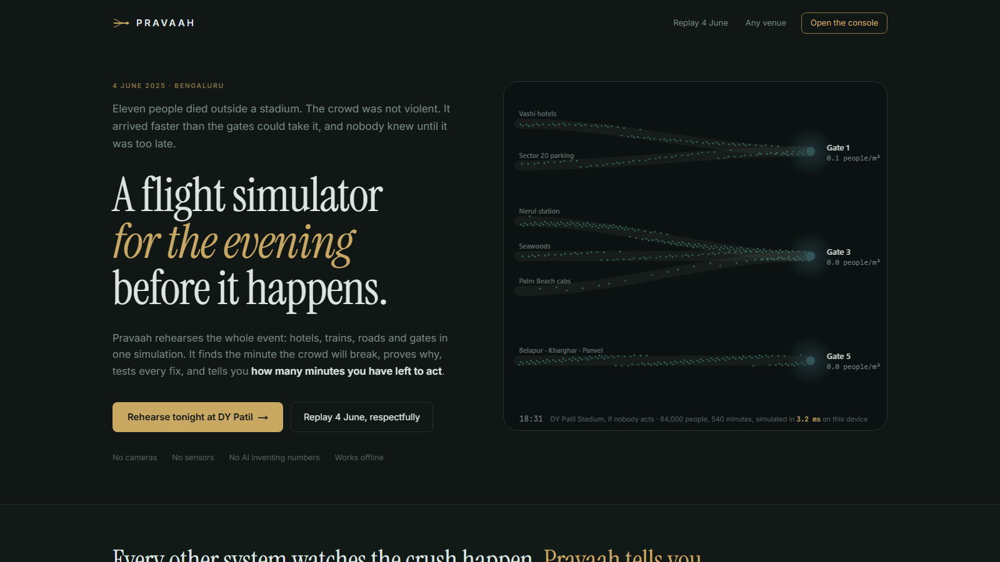
Cover — hero
Headline: "A flight simulator for the evening before it happens." Sub-copy leads with the Bengaluru 2025
crush before any brand talk. Right panel: live flow diagram (Vashi hotels / Sector 20 parking → Gate 1;
Nerul / Seawoods / Palm Beach cabs → Gate 3; Belapur/Kharghar/Panvel → Gate 5), each gate showing live
people/m², with a caption reading "18:31 · DY Patil Stadium, if nobody acts · 84,000 people, 540 minutes,
simulated in 3.2 ms on this device." Two CTAs: "Rehearse tonight at DY Patil" and "Replay 4 June, respectfully."
Trust row: No cameras · No sensors · No AI inventing numbers · Works offline.
Check: does the flow diagram read clearly at a glance, or does it need a legend? Is "3.2 ms" too small a detail to land as impressive, or does it work as a quiet flex?
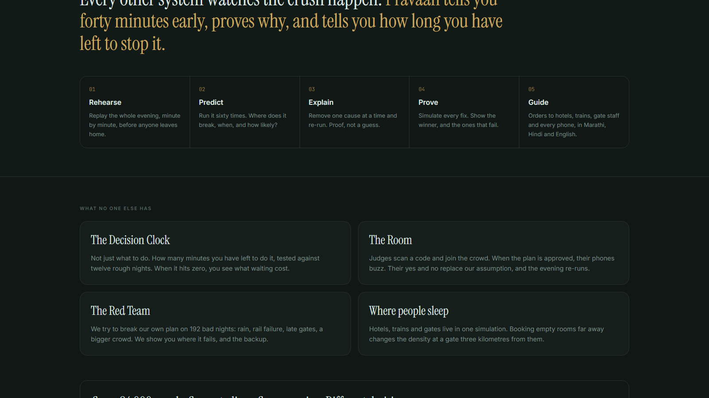
Cover — five steps + positioning line
Large serif pull-quote: "Every other system watches the crush happen. Pravaah tells you forty minutes
early, proves why, and tells you how long you have left to stop it." Below it, a five-column strip:
01 Rehearse, 02 Predict, 03 Explain, 04 Prove, 05 Guide — each with one sentence.
Check: is the positioning line differentiated enough from generic "AI crowd safety" marketing copy, or does it need a sharper, more specific claim?
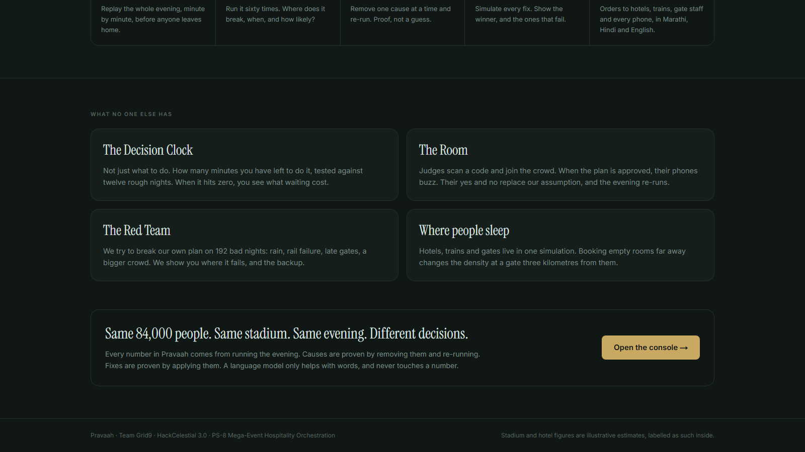
Cover — "what no one else has" + closing CTA
Four differentiator cards (The Decision Clock, The Room, The Red Team, Where people sleep), each with a
one-paragraph explanation. Closing band: "Same 84,000 people. Same stadium. Same evening. Different
decisions." with an "Open the console →" button. Footer credits Team Grid9 / PS-8.
Check: do these four cards feel like genuinely distinct capabilities, or do any overlap enough to merge?
02
The organiser console — the core product
This is where a judge spends most of the demo. Left rail: five numbered steps. Center: a live MapLibre map
with a custom canvas overlay (crowd particles, density halos, crush rings). Top center: the Decision Clock.
Right: live readouts + a Ravi Sharma attendee-trace card. Bottom: the timeline scrubber with a density strip.
Screens below are in the order a judge would actually click through them.
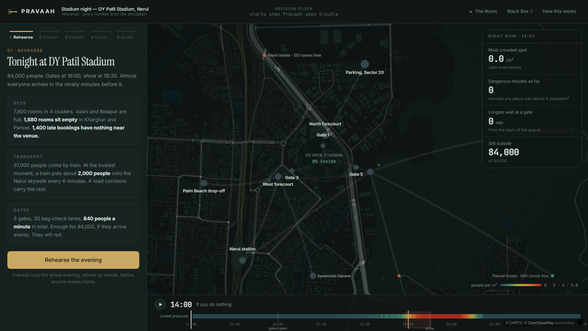
Step 1 · Rehearse — before pressing play
"Tonight at DY Patil Stadium." Three fact blocks (Beds / Transport / Gates), each sentence built from live
scenario data (e.g. "1,880 rooms sit empty in Kharghar and Panvel," "37,000 people come by train... about
2,000 people onto the Nerul skywalk every 6 minutes"). CTA: "Rehearse the evening."
Check: does this intro screen build enough tension before the button, or is it too dry / report-like compared to the cover page's confidence?
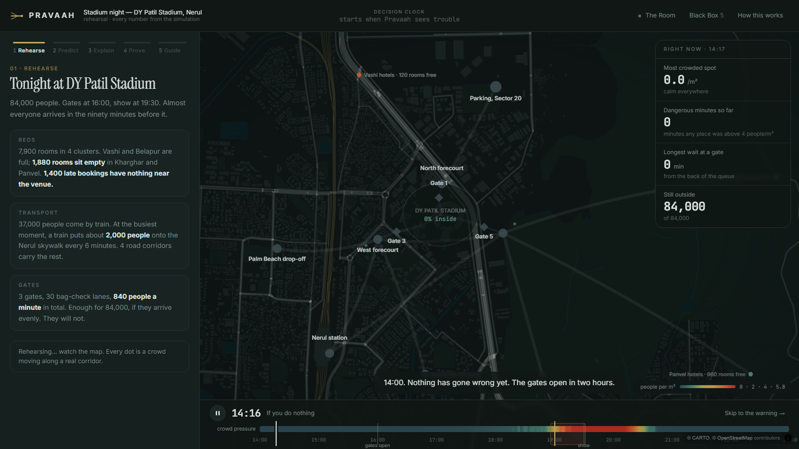
Step 1 · Rehearse — playing
The scripted opening plays automatically: map shows early, near-empty corridors; a caption band narrates
("14:00. Nothing has gone wrong yet. The gates open in two hours."); the density timeline strip at bottom
is filling in as it plays.
Check: is the pacing right for a live demo (not too slow, not skippable-feeling)? Note there's a "Skip to the warning" control for time-pressed demos.
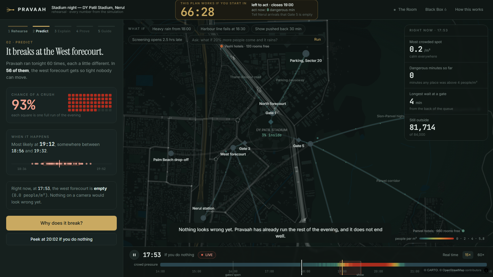
Decision Clock — the hero element
Top-center pill: large monospace countdown 65:57, "left to act · closes 19:00," a live "act now: 0
dangerous min" line, and the specific lever it refers to ("Tell Nerul arrivals that Gate 5 is empty"). The
map underneath is still calm (0.2 people/m²) — this is the "nothing looks wrong yet, but we already know"
moment the pitch is built around.
Check: is this element visually the loudest thing on the page, as a "hero" should be? Compare its size/color/position against the rest of the header.
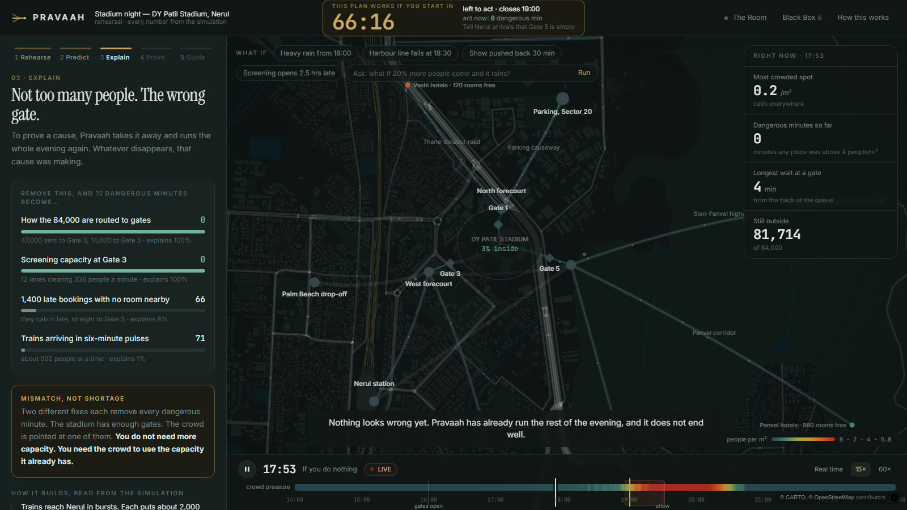
Step 3 · Explain
"Not too many people. The wrong gate." Four causes tested by removal + re-run, each with a bar showing
% of the 72 dangerous minutes it explains. Two different causes each explain ~100% → a highlighted
"Mismatch, not shortage" box explaining the insight in plain language.
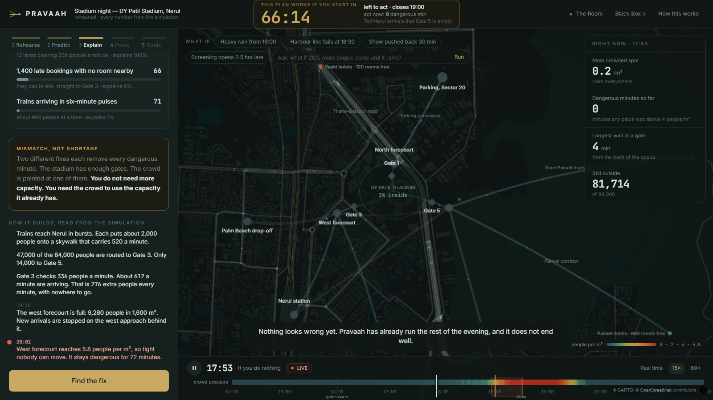
Step 3 · Explain — causal chain
A timestamped, numbered chain ("trains arrive in bursts → 47,000 of 84,000 routed to one gate → gate
clears 336/min but 660/min arrive → forecourt fills → crush") — every line's numbers read directly out
of the simulation frames, not written by hand.
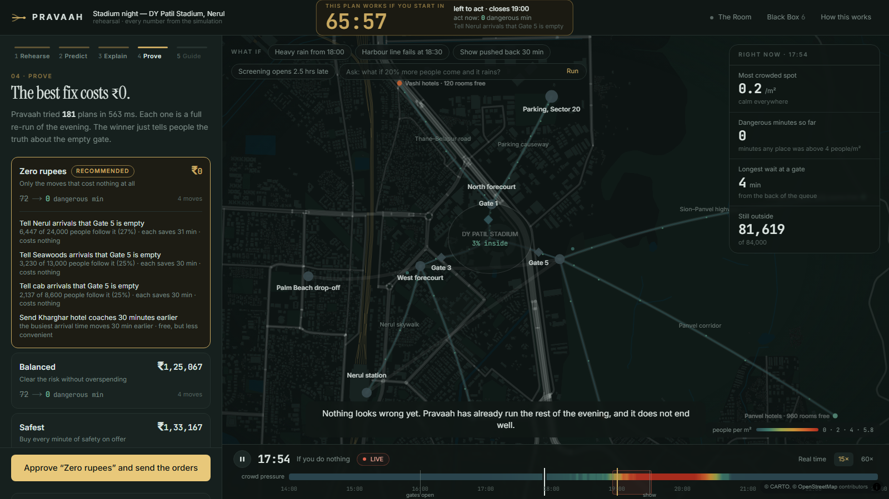
Step 4 · Prove — the plan cards
"The best fix costs ₹0." Header states "Pravaah tried 181 plans in 563 ms." Three plan cards (Zero
rupees / Balanced ₹1,25,067 / Safest ₹1,33,167), each showing 72→0 dangerous minutes. The recommended
card is expanded, listing its four levers with real percentages ("6,447 of 24,000 people follow it
(27%) · each saves 31 min · costs nothing").
Check: "181 plans in 563 ms" is a strong credibility signal — is it prominent enough, or buried in body text?
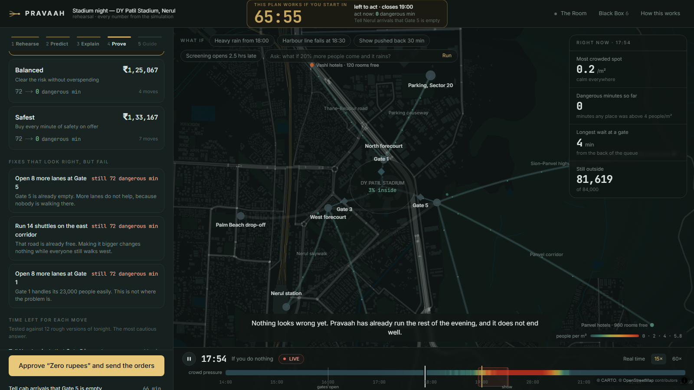
Step 4 · "Fixes that look right, but fail"
Three plausible-but-wrong plans (e.g. "Open 8 more lanes at Gate 5") shown with their actual simulated
result and a one-line reason ("Gate 5 is already empty. More lanes do not help, because nobody is
walking there."). This is a specific, differentiated feature — most competitors would only show winners.
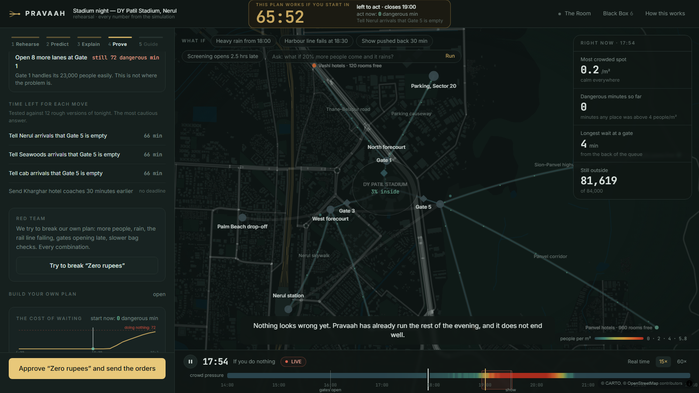
Decision window + cost of waiting
"Time left for each move" (stress-tested against 12 rough nights) plus a small line chart: "the cost of
waiting" — dangerous minutes if the plan is started at each point in time, with "start now: 0 dangerous
min" marked live.
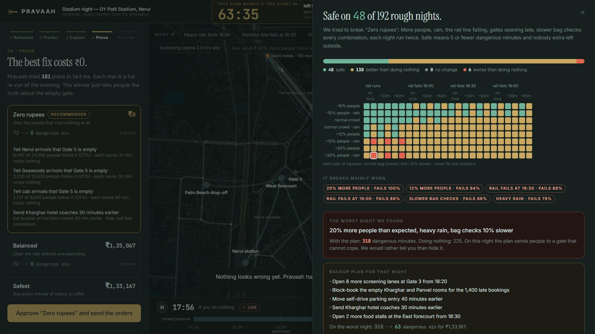
Red Team drawer
"Safe on 48 of 192 rough nights." Stacked bar: 48 safe / 138 better than doing nothing / 0 no change / 6
worse than doing nothing. Full heatmap grid (turnout × rain × rail-failure-time × gate-delay × slow-lanes),
each cell colored by outcome, worst cell outlined. "It breaks mainly when" tag pills. Bottom: the single
worst night found (318 dangerous min with the plan vs 225 doing nothing — plan is worse there,
shown honestly) plus an automatically generated backup plan for that specific night.
Check: this is dense — is the heatmap legible without hovering, or does it need a simpler summary view for a 5-minute demo? Does showing the plan losing on 6 nights read as honesty (good) or as undermining confidence (risk)?
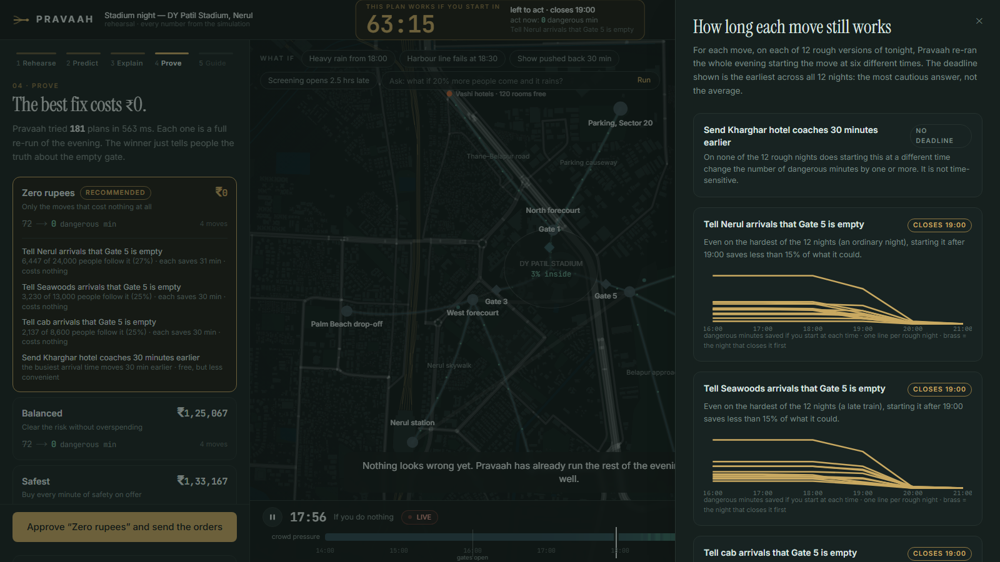
Decision window — detail drawer
Clicking a lever opens per-night benefit curves (dangerous minutes saved vs. time started), one line per
rough night, the governing (earliest-closing) night highlighted in brass.
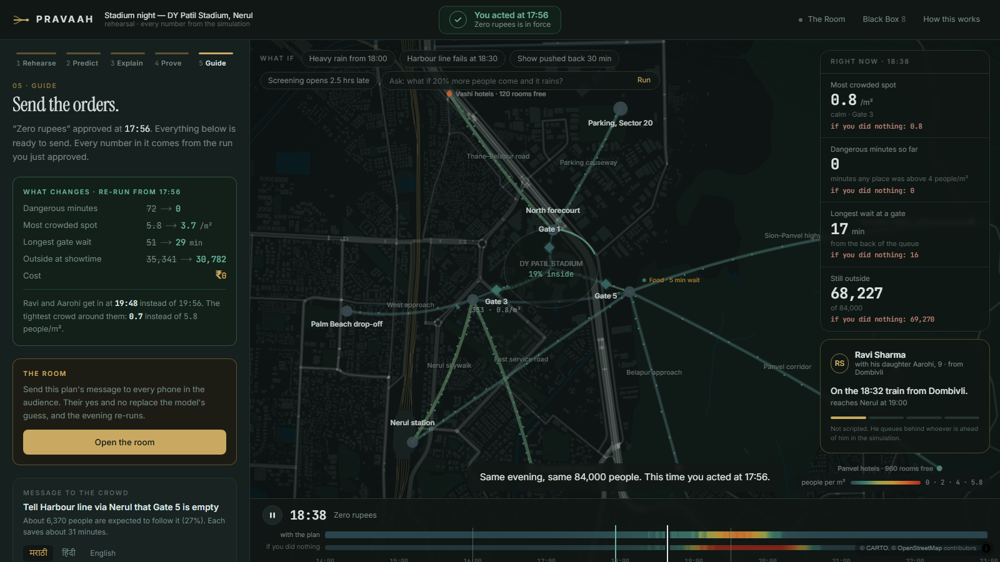
Step 5 · Guide — after approval
Green "You acted at 17:56 · Zero rupees is in force" badge replaces the Decision Clock. Left panel shows
the real re-run deltas (72→0 dangerous min, 5.8→3.7 peak density, 51→29 min gate wait, 35,341→30,782
still outside) plus a Ravi/Aarohi personal-story line ("get in at 19:48 instead of 19:56").
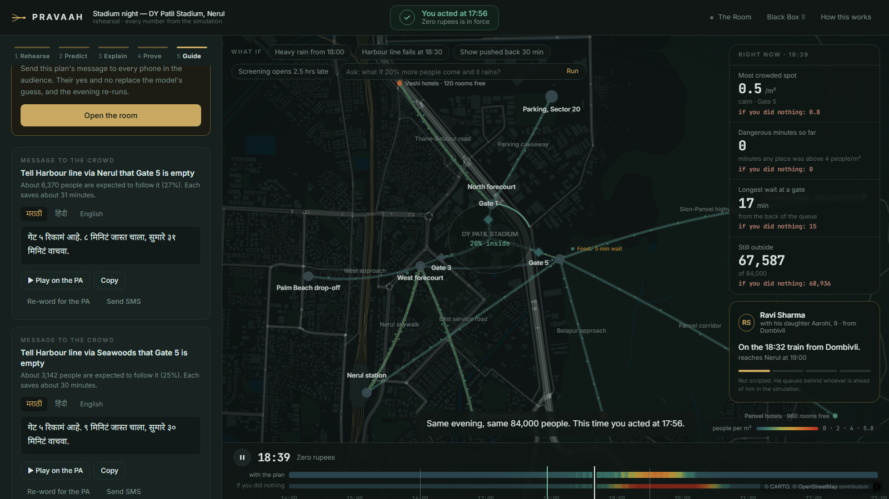
Step 5 · Guide — orders ready to send
Crowd-message card with a MR/HI/EN language switcher, "Play on the PA" (browser TTS), "Copy," "Re-word for
the PA" (LLM rewording with numbers locked/reinjected), and "Send SMS." Below it, staff/transport/
accommodation order cards in plain operational language.
Check: does the crowd-message card do too much (language switch + 4 buttons) for one card, or is that density appropriate here?
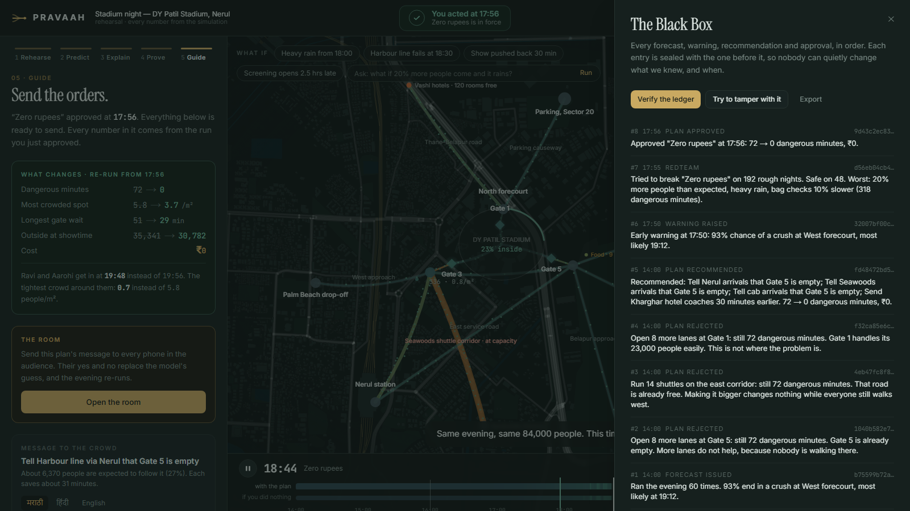
Black Box ledger
Every forecast/warning/plan/approval logged in order, each with a truncated hash, e.g. "#7 17:55 REDTEAM
— Tried to break 'Zero rupees' on 192 rough nights. Safe on 48... (318 dangerous minutes)." "Verify the
ledger," "Try to tamper with it," and "Export" controls at top.
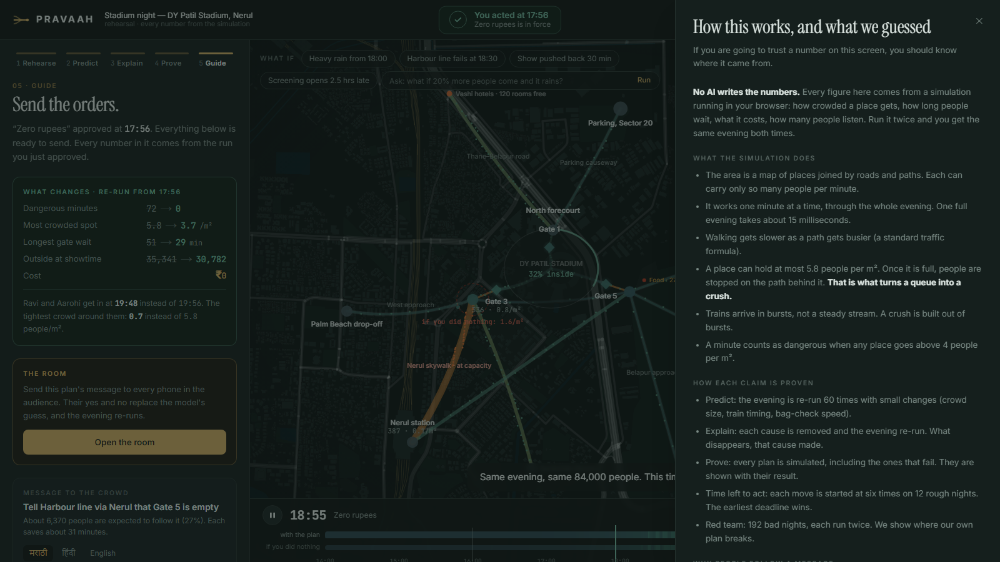
"How this works" disclosure panel
Explicit honesty panel: what's simulated vs. guessed, how each claim (predict/explain/prove/decision
window/red team) is proven, and exactly where the LLM is used and how its output is constrained.
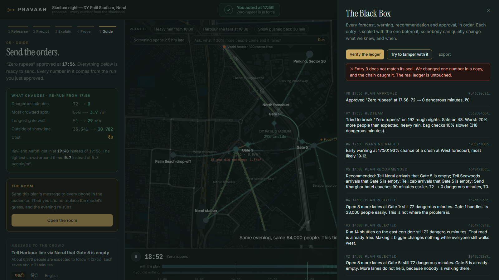
Black Box — live tamper test
Clicking "Try to tamper with it" mutates a copy of one entry and re-verifies live in the browser; the
hash-chain check fails and reports exactly which entry broke. This is a real, runnable proof, not a
claim in copy.
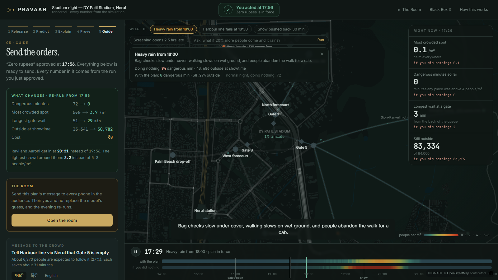
What-if chips
One-click scenario patches (rain, rail failure, delayed show, late gates) plus a free-text box ("ask: what
if 20% more people come and it rains?") parsed by an LLM into a structured, clamped patch — never a
number directly. Result banner compares do-nothing vs. with-plan for that scenario.
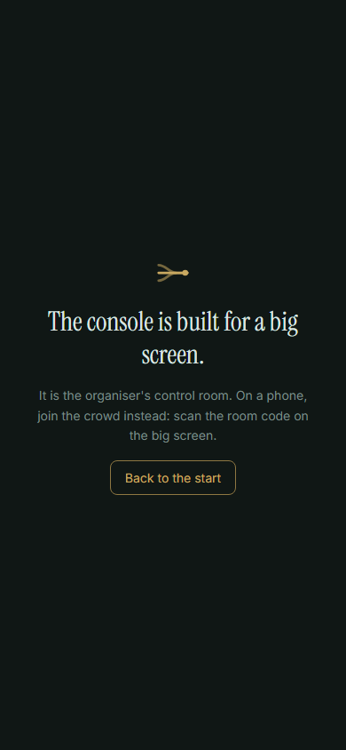
Console on a phone
Deliberately redirected: "The console is built for a big screen... On a phone, join the crowd instead."
The console itself is never attempted at phone width.
Check: is this empty state too bare? It's honest, but a judge opening the link on their phone gets almost nothing to look at — worth a small visual (QR to the console URL for desktop? a screenshot preview?) to avoid feeling like a dead end.
03
The Room — phones become the crowd
Captured end-to-end with two real headless-browser "phones" (English + Marathi) plus 24 simulated phones,
against the running dev server: open room → phones join → plan message broadcasts → phones vote → console
re-runs the evening with real acceptance rates → each phone gets a personalized outcome. No steps skipped or
faked for these screenshots.
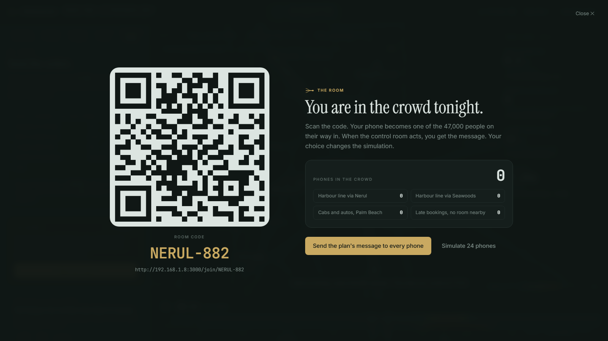
The Room — opened from the console
Full-screen QR + short room code (e.g. "NERUL-882"). Right side: "You are in the crowd tonight," a live
"phones in the crowd" count broken down by cohort (Harbour line via Nerul: 13, via Seawoods: 7, Cabs and
autos: 5, Late bookings: 1).
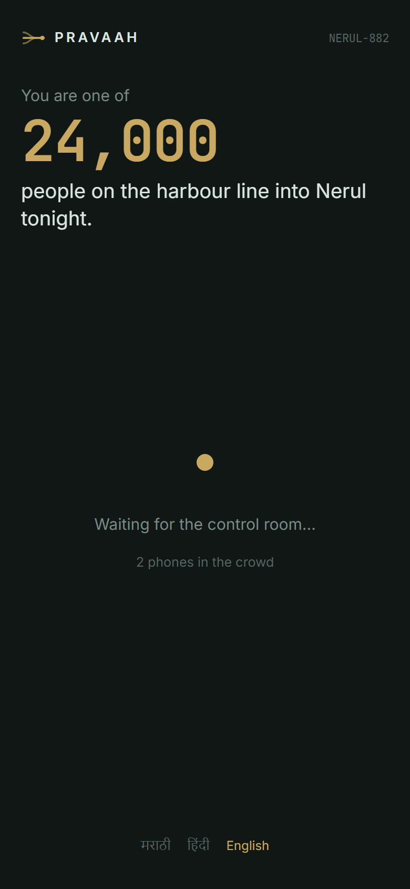
Phone — joined (English)
No login. "You are one of 24,000 people on the harbour line into Nerul tonight." Waiting indicator at
the bottom while the control room hasn't acted yet.
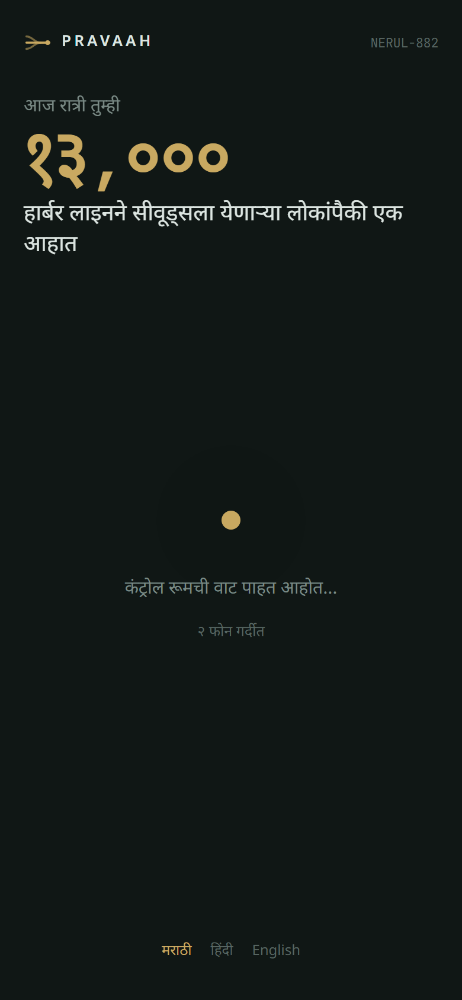
Phone — joined (Marathi)
Same screen, fully localized, including Devanagari numerals (e.g. "१३,०००") — not just translated
strings with Latin digits.
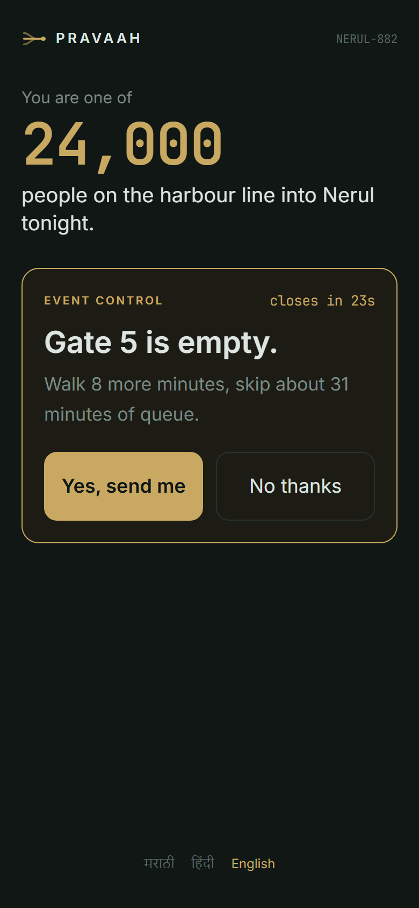
Phone — message arrives (English)
"Gate 5 is empty. Walk 8 more minutes, skip about 31 minutes of queue." Yes/No buttons, "closes in 23s"
countdown. Phone also vibrates on arrival (not visible in a screenshot, but wired via
navigator.vibrate).
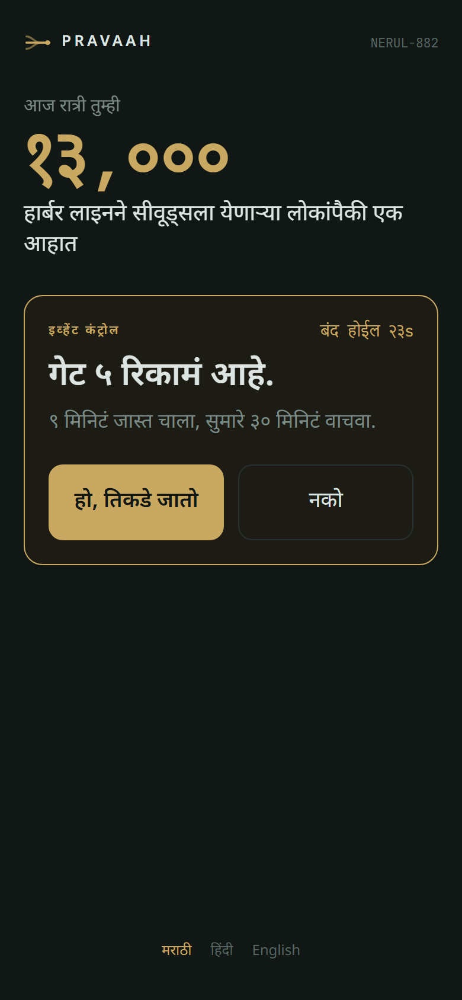
Phone — message arrives (Marathi)
Same message, fully localized template — this is a fixed, reviewed template with numbers injected, not
live-translated by an LLM.
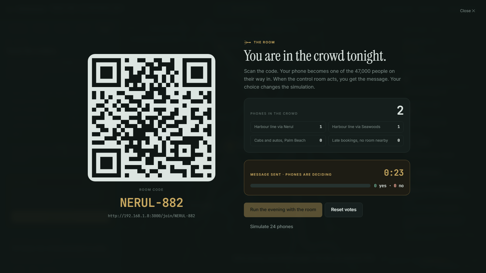
Console side — live vote tally
"Message sent · phones are deciding," a live-updating yes/no bar and countdown, polling phone votes in
real time.
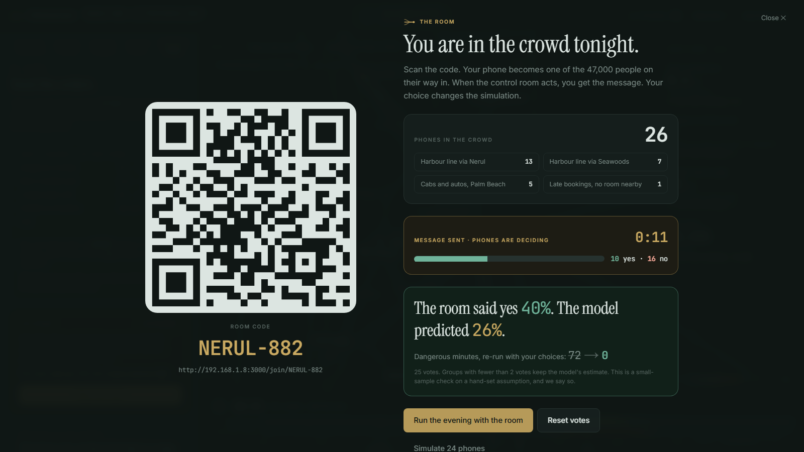
Console side — the payoff
"The room said yes 40%. The model predicted 26%." Dangerous
minutes re-run live: 72 → 0. A note: "25 votes. Groups with fewer than 2 votes keep the model's estimate.
This is a small-sample check on a hand-set assumption, and we say so."
Check: this is arguably the single most differentiated moment in the whole product (a judge's own vote changing a live simulation in front of them) — is it staged/paced for maximum impact, or does it arrive too quietly after two buttons?
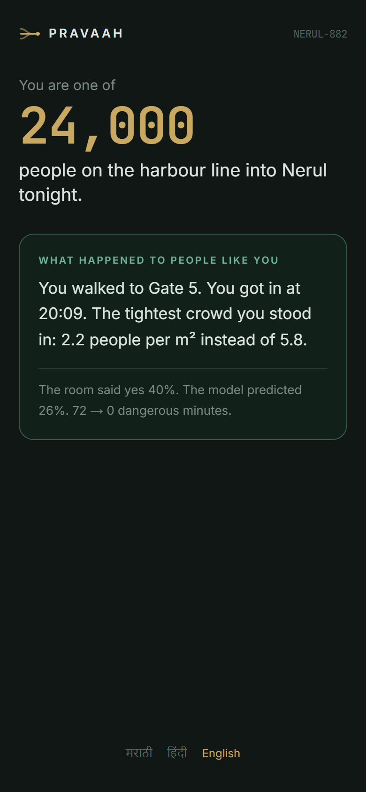
Phone — personal outcome
"What happened to people like you": "You walked to Gate 5. You got in at 20:09. The tightest crowd you
stood in: 2.2 people per m² instead of 5.8," plus the same room-vs-model headline repeated for context.
04
4 June 2025 replay — the sensitive one
A reconstruction of the real Bengaluru stadium crush from public reporting, run through the same engine. This
is the highest-risk screen in the product — it has to be accurate, sourced, and respectful, or it actively
hurts the pitch.
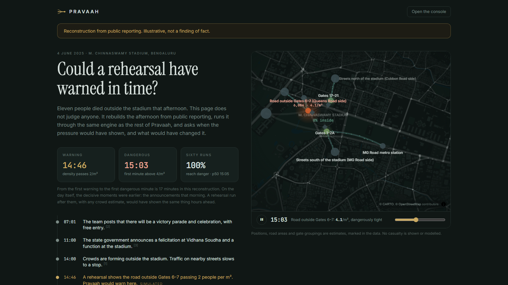
Replay — top
Mandatory disclosure banner at the very top: "Reconstruction from public reporting. Illustrative, not a
finding of fact." Headline: "Could a rehearsal have warned in time?" Opens with the human cost, not
statistics. Three stat tiles: Warning 14:46 (density passes 2/m²), Dangerous 15:03 (first minute above
4/m²), Sixty runs 100% (reach danger, p50 15:05). Live map with a scrub bar, road/gate labels
("Road outside Gates 6–7 (Queens Road side)"), sourced timeline below with numbered citations.
Check: does this strike the right tone — informative and evidentiary without being exploitative? Is the disclosure prominent enough, and is it repeated where needed?
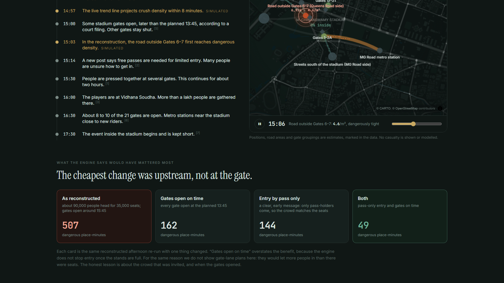
Replay — upstream what-ifs
"The cheapest change was upstream, not at the gate." Deliberately does not offer gate-lane plans
(documented reason: the engine doesn't cap entry at capacity, so lane plans would overstate safety
here) — instead compares upstream interventions like earlier gate opening and pass-only entry.
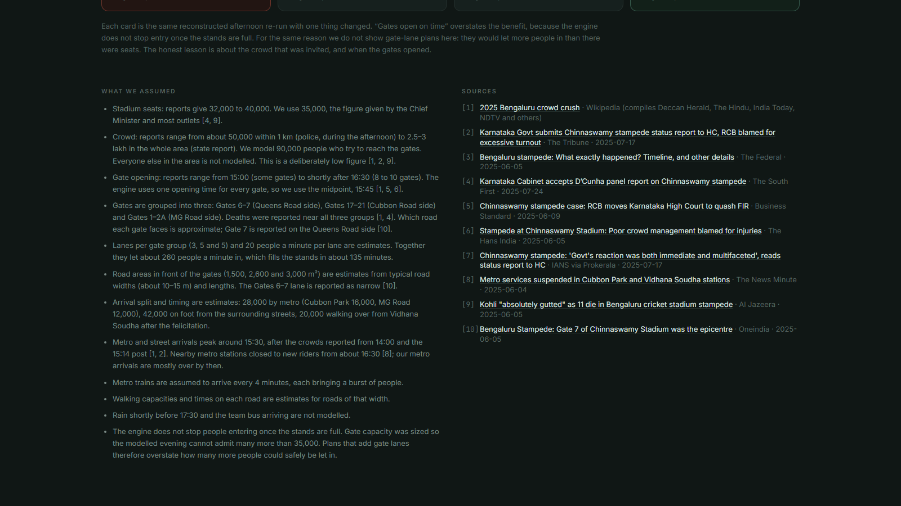
Replay — sources & assumptions
A numbered source list (outlet + date) matching the inline citations above, plus an explicit
assumptions list for anything estimated rather than reported.
05
Any venue — the generalization proof
Answers the obvious judge question ("is this hardcoded to one stadium?"). Four cached venues plus live
OpenStreetMap import; switching venues re-simulates and re-optimizes immediately.
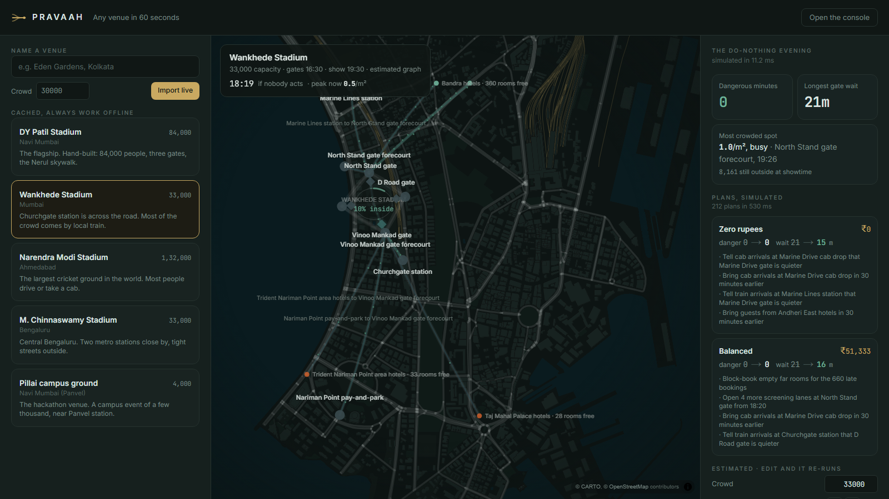
Venues — Wankhede Stadium
Auto-built graph (North Stand gate, D Road gate, Vinoo Mankad gate, real station/hotel names), do-nothing
evening re-simulated in 11.2 ms, Zero-rupees and Balanced plans generated fresh for this venue.
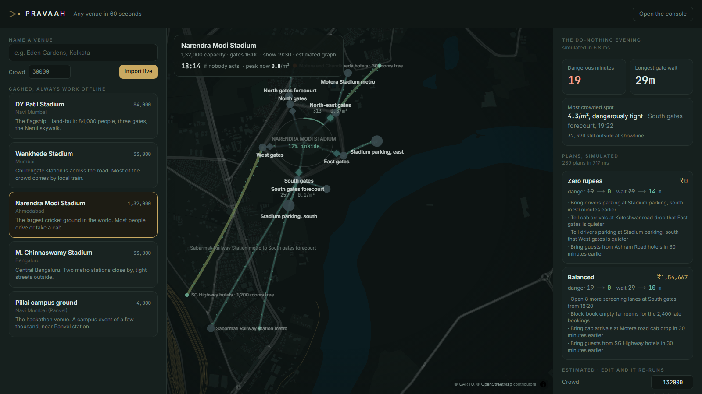
Venues — Narendra Modi Stadium
132,000 capacity — the only cached venue whose do-nothing evening shows real danger (19 dangerous
minutes), which is a good sign: it wasn't tuned to always show a crisis.
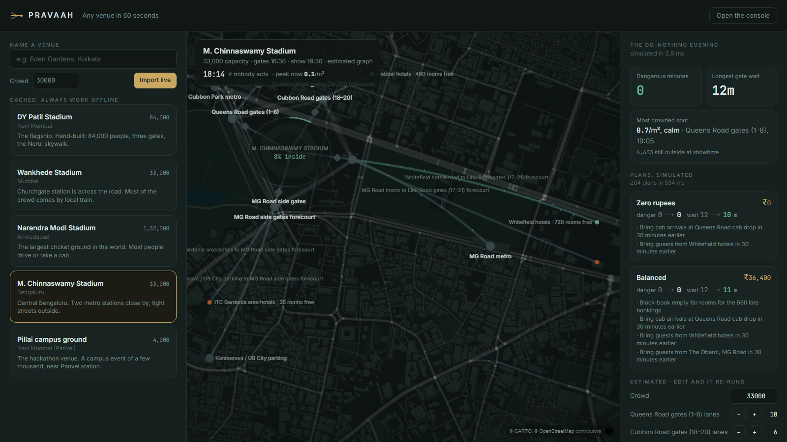
Venues — M. Chinnaswamy, editable estimates
Every auto-derived number (gate lanes, crowd size) is marked estimated and directly editable with
steppers, re-running the simulation live as you adjust.
Check: is it clear enough, without reading the small print, which numbers here are "real" (from OSM/spec) vs. estimated defaults?
06
Your review
Please answer the five numbered questions at the top of this document, using only what you saw above. Where possible, reference the specific screenshot filename (e.g. 12-console-redteam.png) so we know exactly which screen you mean. If you'd find it useful, also call out:
Which single screen would you show first if you only had 30 seconds of a judge's attention, and why?
Any place where the copy tells the viewer something the visual should be showing instead (or vice versa).
Any accessibility or legibility concern you can spot directly from the screenshots (contrast, text size, color-only signal).
Whether the dark "control room" visual identity (brass accent, monospace numerals, density color ramp) is applied consistently across all five sections above, or breaks anywhere.